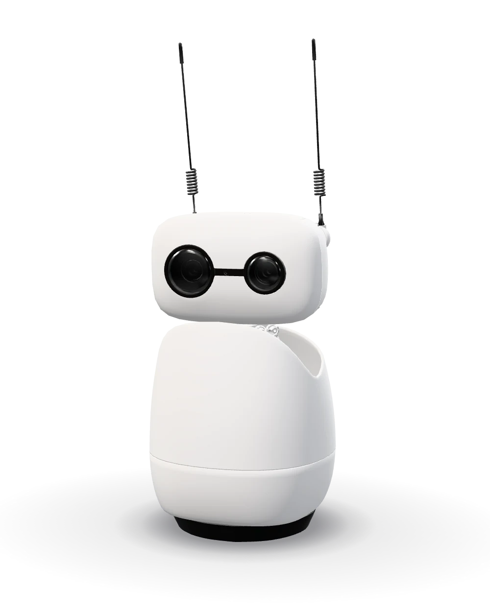

STARBUD / FORM RESEARCH
参考图索引
按项目文件夹顺序浏览，点击文件夹展开图片。
00_Reachy_Mini结构基底11 张
01_整体造型11 张
02_面板与侧部细节7 张


03_换装与模块6 张


05_用户提供参考6 张


06_圆形与圆润面板9 张


07_比例与机身形态9 张


根目录文件 · 情绪版与对比板（9 张）


设计取舍与制作参考
三项设计取舍
| 决定 | 外观上比较什么 | 同时确认什么 |
|---|---|---|
| 圆形 / 方形面部 | 圆形更集中；横向圆角矩形有更宽的表情区域。圆形外框也可以包住矩形显示区，LG Hub 图片中可直接观察到这种关系。 | 实际显示模组是否已定：有效显示区、整体尺寸、厚度、接口、发热；摄像头和麦克风位置。 |
| 大头 / 小头大身体 | 大头突出角色与表情；小头大身更偏家居产品感。以上是视觉解读，不是用户偏好的验证结果。 | 大头的质量、重心和颈部负载；小头是否容纳原机构、传感器及走线。不要只同比缩小外壳。 |
| 单天线 / 双天线 | 单根形成一个顶部符号；双根可以保留或转译为双芽、双叶、双耳式轮廓。 | Reachy Mini 原基底有两根活动天线。若两路独立动作是保留功能，单根方案需要重新确认机构与控制，不能直接删减。 |
建议下一步画的 3 组草图（尚未定案）
A / 保留基底动作：圆角矩形面部 + 较大头部 + 双芽式天线。先检查头壳重量与两根天线的转动空间。
B / 圆润萌宠：圆润面部 + 饱满头壳 + 双短触角。先确认圆润视觉能否通过外框实现，再决定真实屏幕规格。
C / 家居产品：较小头部 + 更完整的机身 + 简洁顶部轮廓。单根造型作为条件方案，待确认两路天线动作的功能边界。
结构与电路资料入口
原有 Reachy Mini 尺寸图、机构图、器件布局、接口与分件实拍全部保留。版本和运动范围以团队实机与当前配置为准；旧官方范围图与 FAQ 的角度描述有差异，不能直接当作新外壳的碰撞边界。
和结构 / 电子同事对齐的 5 个输入
① 实际版本、改动清单与实机尺寸。② 所保留板卡、摄像头、麦克风、扬声器和接口位置。③ 头部、身体和天线全行程运动包络。④ 新头壳与附件的质量、重心、安装点、走线和拆装要求。⑤ 样机工艺、壁厚、紧固方式与装配公差。